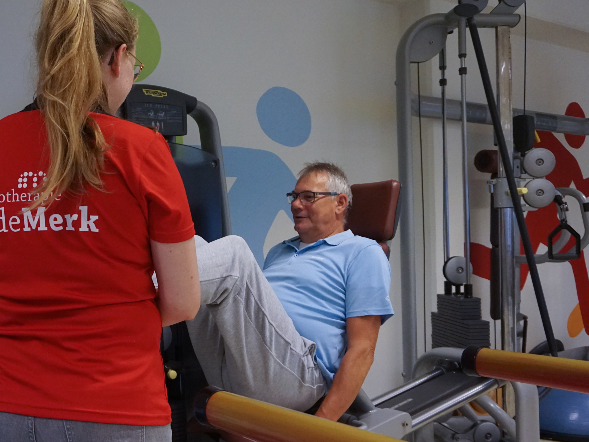

Oncologiefysiotherapie
Kanker en gevolgen van behandelingen door deze ziekte hebben invloed op het hele lichamelijke systeem. Door screening en betere behandelmethoden kunnen we gelukkig zeggen dat leven met of na het hebben van kanker steeds beter mogelijk is. Ondanks dat kunnen patiënten wel langdurige klachten van de ziekte ervaren. Zij kunnen onder meer te maken hebben met verminderde mobiliteit, verstoorde lichaamsbeleving, verminderde spierkracht, conditieverlies, spanningsklachten, pijn, ademhalingsproblemen, vermoeidheid, fibrose, huidveranderingen en contracturen. Daardoor kunnen er problemen ontstaan in het uitvoeren van het algemene dagelijkse leven, waarbij je kunt denken aan beperkingen in werk en/of hobby’s.
Wat is oncologiefysiotherapie?
De oncologiefysiotherapeut kan worden ingezet deze gevolgen van de ziekte te beperken in alle fasen: de curatieve fase (de herstelfase), de palliatieve fase en/of de terminale fase. Elke fase heeft op zijn eigen manier invloed op het fysieke, psychische en sociale welbevinden. Omdat de behandeldoelen per fase verschillen, is specifieke behandeling door de gespecialiseerde oncologiefysiotherapeut vereist. Zo zal iedere patiënt op eigen wijze leren omgaan met de nieuwe situatie. De oncologiefysiotherapeut kan een ondersteunende rol vervullen als coach in dit proces functioneren.
Als ik dit niet had gedaan weet ik zeker dat ik er nog lang niet was. (Van der Wiel)
Binnen De Merk richt Floor zich op de behandeling van oncologiepatiënten in zowel individuele behandelingen als groepstherapie.